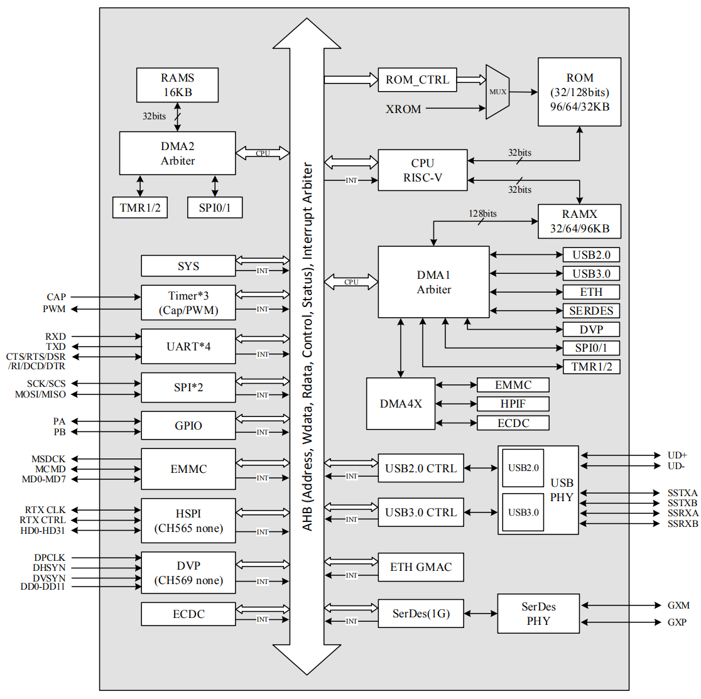

CH569¶
WCH : RISC-V3A 120MHz USB 3.0 HSPI SerDes 10Mbps(PHY) 1Gbps(MAC) Ethernet EMMC DVP
Xin简介¶

规格参数¶
片上采取 128 位数据宽度的 DMA 以支持多个高速外设的高带宽需求，实现大数据量的高速传输。外设包括 USB3.0 超速、USB2.0高速主机和设备控制器及收发器 PHY、千兆以太网控制器、专用高速 SerDes 控制器及收发器 PHY、SD/EMMC接口控制器、加解密模块、高速并行接口、数字视频接口 DVP 等，可广泛应用于流媒体、即时存储、超高速 FIFO、通讯延长、安防监控等应用场景。
基本参数¶
发布时间：
参考价格： ￥31
制程工艺：
供货周期：
处理性能：
封装规格：QFN68
运行环境：-40°C to 85°C
RAM容量：16 KB + 32/64/96 KB
Flash容量：448 KB
特征参数¶
120 MHz RISC-V3A ，支持单周期乘法和硬件除法、可编程中断控制器、低功耗两级流水线
USB3.0控制及收发器（内置PHY），支持主机Host/设备Device模式、OTG功能，支持USB3.0 HUB
USB2.0控制及收发器（内置PHY），支持主机Host/设备Device模式，支持控制/批量/中断/同步传输
千兆以太网控制器 Ethernet ，提供RGMII和RMII PHY接口，支持10/100/1000Mbps速率
HSPI，可配置8/16/32位数据宽度，内置FIFO，支持DMA，最快传输速度约为3.8Gbps
SerDes 可直接驱动光纤，支持网线（仅使用1组差分线）传输90米，支持1.25Gbps高速差分信号通讯
内置EMMC控制器，支持单线、4线、8线数据通讯模式，符合EMMC卡4.4和4.5.1规范，兼容5.0规范
内置数字视频接口DVP，可配置8/10/12位数据宽度，支持YUV、RGB、JPEG压缩数据
448KB CodeFlash，32KB DataFlash，16KB的32位宽SRAM，32/64/96KB可配置的128位宽SRAM
支持AES/SM4算法，8种组合加解密模式，支持SRAM/EMMC/HSPI外设接口数据加解密
4组UART，最高波特率6Mbps，兼容16C550，内置FIFO，多个触发级
2组SPI接口，支持主从(Master/Slave)模式，内置FIFO，支持DMA
主动并口：8位数据，15位地址总线
3组26位定时器，支持定时、计数、信号捕捉、PWM调制输出，4组扩展PWM输出，占空比可调
49个通用IO，8个可设置电平/边沿中断，部分引脚具有复用及映射功能
内置看门狗，集成2线调试接口，支持在线仿真
Hint
CH569 强悍的高速外设配置十分有冲击力，但是受限于内核性能无法进行数据处理，更多是作为桥接芯片
芯片架构¶
供电电压：2.1 to 3.6 V
功耗参数¶
支持低功耗模式，支持部分GPIO、USB、以太网信号唤醒
连接能力¶
Ethernet¶
10/100/1000Mbps
SerDes¶
SerDes是Serializer/Deserializer的缩写，即串行器和解串器，顾名思义是一种将并行数据转换成串行数据发送，将接收的串行数据转换成并行数据的”器件“。
SerDes主要具有以下优点：
减少布线冲突（无单独的时钟线，时钟嵌入在数据流中，从而也解决了限制数据传输速率的信号时钟偏移问题）；
抗噪声、抗干扰能力强（差分传输）；
降低开关噪声；
扩展能力强；
更低的功耗和封装成本；
SerDes有四种架构：1）并行时钟SerDes；2）嵌入式时钟SerDes；3）8b/10b编码SerDes；4）位交错SerDes。
HSPI¶
HSPI接口通讯可比拟FPGA功能，最典型的应用场景是获取高速ADC器件数据 ADC
USB¶
USB-HS-OTG(480Mbps) USB-SS-OTG(5Gbps) 384MB/s
Hint
建议384MB/s以内的应用场景
Xin选择¶
品牌对比¶
系列对比¶
型号对比¶

CH565¶
CH565 相较于 CH569 多了DVP接口，去掉了 HSPI ，甚至在更小QFN40上去掉了以太网和调试端口。

Xin应用¶
开发板¶
CH569W-R0-1V0¶

官方示例¶
USB3.0超高速U盘 ，CH569配有EMMC卡控制器和USB3.0 OTG控制器及收发器，通过EMMC接口挂载SD/TF/EMMC卡后即可具备U盘设计的基本物理资源。
软件设计上，缓冲区资源共享，划分队列管理，USB3.0端数据和EMMC卡数据只进行DMA地址修改，不参与任何数据拷贝，减少MCU处理时间；添加了EMMC卡协议命令处理及USB3.0设备端命令响应过程。
实测使用一款16G EMMC卡作为存储介质(工作在HS200模式下)，在Win10平台下进行大数据拷贝，读出速度不低于90MB/s，写入速度不低于40MB/s
Hint
这个方案测试速率连USB-HS的性能都远远没发挥出来！
Xin总结¶
能力构建¶
要点提示¶
由于端口复用问题，所以烧录固件进入BOOT模式有点麻烦，特别是CH569W-R0-1V0并没有带有任何按键，在调试过程中需要自己附带更多的外部接线环境，没法开箱即用。